IFS paper plots¶
In [2]:
import numpy as np
import glob,os
%pylab inline --no-import-all
plt.rc('font', family='serif', serif='Times',size=15)
plt.rc('text', usetex=True)
plt.rc('xtick', labelsize=20)
plt.rc('xtick.major', size=10)
plt.rc('ytick.major', size=10)
plt.rc('ytick', labelsize=20)
plt.rc('axes', labelsize=20)
plt.rc('figure',titlesize=25)
plt.rcParams['image.origin'] = 'lower'
plt.rcParams['image.interpolation'] = 'nearest'
plt.rcParams['axes.linewidth'] = 2.
from astropy.io import fits
import logging as log
from crispy.tools.initLogger import getLogger
log = getLogger('main')
from crispy.tools.image import Image
os.chdir('/Users/mrizzo/IFS/crispy/crispy/WFIRST/')
from params import Params
import scipy as sp
par = Params()
par.hdr
cmap = 'inferno'#'gray_r'
Populating the interactive namespace from numpy and matplotlib
In [23]:
lensX=10
lensY=10
from crispy.tools.locate_psflets import PSFLets
from crispy.tools.reduction import get_cutout
polychromeR = fits.open(par.wavecalDir + 'polychromeR%d.fits.gz' % (par.R))
# polychromeR = fits.open(par.wavecalDir + 'polychromeR%d.fits' % (par.R))
psflets = polychromeR[0].data
psftool = PSFLets()
lamlist = np.loadtxt(par.wavecalDir + "lamsol.dat")[:, 0]
allcoef = np.loadtxt(par.wavecalDir + "lamsol.dat")[:, 1:]
# lam in nm
psftool.geninterparray(lamlist, allcoef)
xlist = []
ylist = []
for lam in lamlist:
_x,_y = psftool.return_locations(lam, allcoef, lensX, lensY)
xlist += [_x]
ylist += [_y]
im = Image(filename = par.wavecalDir + 'polychromeR%dstack.fits.gz' % (par.R))
subim, psflet_subarr, [x0, x1, y0, y1] = get_cutout(im,xlist,ylist,psflets)
crispy - INFO - Read data from HDU 0 of ..//ReferenceFiles/wavecalR50_660/polychromeR50stack.fits.gz
In [24]:
for i in range(psflet_subarr.shape[0]):
psflet_subarr[i] /= np.sum(psflet_subarr[i])
print len(psflet_subarr)
19
In [25]:
import scipy as sp
psflets_flat = np.reshape(psflet_subarr, (psflet_subarr.shape[0], -1))
A = psflets_flat.T
N = psflet_subarr.shape[0]
Niter = 50
print N
lstsq = np.zeros((N,Niter+1))
lstsq_notsmoothed = np.zeros((N,Niter+1))
pixnoise = 50
vect = np.ones(N)*100
pimg = np.random.poisson(np.sum(psflet_subarr*vect[:,np.newaxis,np.newaxis],axis=0)+pixnoise)
plt.imshow(pimg,cmap=cmap)
plt.colorbar(orientation='horizontal')
img = pimg-pixnoise
sumpix = np.sum(img)
lstsq[:,0] = np.ones(N)*sumpix/float(N)/2
lstsq_notsmoothed[:,0] = np.ones(N)*sumpix/float(N)/2
for i in range(Niter):
prev = lstsq[:,i]
variance = np.reshape(np.sum(psflet_subarr*prev[:,np.newaxis,np.newaxis],axis=0)+pixnoise,-1)
Ninv = np.diag(1./(variance+1e-10))
Cinv = np.dot(A.T,np.dot(Ninv,A))
C = np.linalg.inv(Cinv)
Q = sp.linalg.sqrtm(Cinv)
s = np.sum(Q,axis=0)
R = Q/s[:,np.newaxis]
x = np.reshape(img,-1)
right = np.dot(A.T,np.dot(Ninv,x))
f = np.dot(C,right)
lstsq_notsmoothed[:,i+1] = f
lstsq[:,i+1] = np.dot(R,f)
outvect = np.dot(R,vect)
plt.figure(figsize=(10,5))
plt.plot(lstsq[:,1],linestyle='none',marker='o',markerfacecolor='none',label="First Least Squares iteration")
plt.plot(lstsq[:,-1],label="Last Least Squares iteration")
plt.plot(lstsq_notsmoothed[:,-1],label="Last Least Squares iteration, unsmoothed")
plt.plot(outvect[:],'--',label="Input vector")
plt.legend()
19
Out[25]:
<matplotlib.legend.Legend at 0x10ebe0e10>
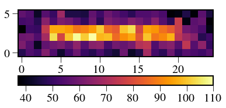
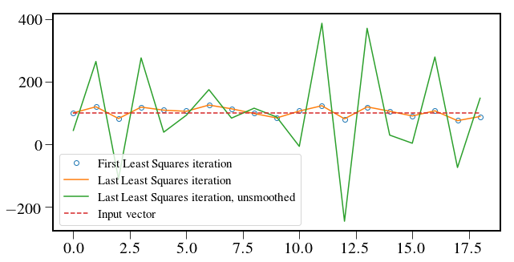
In [26]:
plt.figure()
final = lstsq[:,-1]
model = pixnoise+np.sum(psflet_subarr*final[:,np.newaxis,np.newaxis],axis=0)
model_notsmoothed = pixnoise+np.sum(psflet_subarr*final[:,np.newaxis,np.newaxis],axis=0)
res = pimg-model
plt.imshow(res,cmap=cmap)
plt.colorbar(orientation='horizontal')
chi2 = np.sum(res**2/model)/np.prod(res.shape)
chi2_notsmoothed = np.sum((pimg)**2/model)/np.prod(res.shape)
print chi2
fig, axarr = plt.subplots(4,1,figsize=(10,10))
axarr[0].axis('off')
axarr[0].set_title('(a) Noisy image')
im = axarr[0].imshow(pimg,cmap=cmap,vmin=40,vmax=110)
axarr[2].imshow(model,cmap=cmap,vmin=40,vmax=110)
axarr[2].set_title('(c) Smoothed least squares model')
axarr[2].axis('off')
axarr[1].axis('off')
final = lstsq_notsmoothed[:,-1]
model_notsmoothed = pixnoise+np.sum(psflet_subarr*final[:,np.newaxis,np.newaxis],axis=0)
chi2_notsmoothed = np.sum((pimg-model_notsmoothed)**2/model_notsmoothed)/np.prod(res.shape)
print chi2_notsmoothed
axarr[1].imshow(model_notsmoothed,cmap=cmap,vmin=40,vmax=110)
axarr[1].set_title('(b) Least squares model')
axarr[3].axis('off')
axarr[3].set_title('(d) Residuals, $\chi^2$={:.2f}'.format(chi2))
im2 = axarr[3].imshow(res,cmap=cmap,vmin=-20,vmax=20)
fig.subplots_adjust(right=0.8,wspace=0.1,hspace=0.25)
cbar_ax = fig.add_axes([0.82, 0.34, 0.05, 0.52])
fig.colorbar(im, cax=cbar_ax)
cbar_ax = fig.add_axes([0.82, 0.13, 0.05, 0.15])
fig.colorbar(im2, cax=cbar_ax)
fig.savefig('/Users/mrizzo/Downloads/Microspectrum_Extraction.pdf',dpi=150,bbox_inches='tight')
0.85055325594
0.793929068872


In [27]:
plt.imshow(np.sum(psflet_subarr*vect[:,np.newaxis,np.newaxis],axis=0))
Out[27]:
<matplotlib.image.AxesImage at 0x1c1e262610>

In [33]:
plt.figure(figsize=(7,5))
from crispy.tools.reduction import calculateWaveList
lam_midpts,_ = calculateWaveList(par,method='lstsq',Nspec=20)
# plt.plot(lstsq[:,1],linestyle='none',marker='o',markerfacecolor='none',label="First Least Squares iteration")
plt.plot(lam_midpts,lstsq[:,-1],label="Smoothed least squares ",color='royalblue',lw=3)
plt.plot(lam_midpts,lstsq_notsmoothed[:,-1],label="Unsmoothed least squares",color='crimson',lw=3)
plt.plot(lam_midpts,outvect[:],'--',label="Input vector",color='gray')
plt.legend()
plt.xlabel('Wavelength (nm)')
plt.ylabel('Counts')
plt.savefig('/Users/mrizzo/Downloads/Extracted_Microspectrum.pdf',dpi=150,bbox_inches='tight')
crispy - INFO - Reduced cube will have 19 wavelength bins

In [20]:
import pandas as pd
from crispy.tools.reduction import calculateWaveList
from scipy import signal
plt.figure(figsize=(7,5))
pd.DataFrame(data=R)
lam_midpts,_ = calculateWaveList(par,method='lstsq')
plt.plot(lam_midpts,R[N/2,:],lw=4,label='Measured spectrograph resolution',color='k')
plt.plot(lam_midpts,signal.gaussian(N, std=19./11./2./2.35)*np.amax(R[N/2,:]),label='Gaussian of FWHM=2',marker='o',
markerfacecolor='none', markersize=12)
plt.axhline(y=np.amax(R[N/2,:])/2,color='k',linestyle='dashed')
# plt.text(610,0.23,"Half Maximum",fontsize=20)
plt.xlabel('Wavelength (nm)')
plt.ylabel('Intensity')
# plt.title('Instrument line function')
plt.savefig('/Users/mrizzo/Downloads/Instrument_Line_Function.pdf',dpi=150,bbox_inches='tight')
MSE = np.sum((R[N/2,:]-signal.gaussian(N, std=19./11./2./2.35)*np.amax(R[N/2,:]))**2)/len(R[N/2,:])
print "MSE=",MSE
np.savetxt('/Users/mrizzo/Downloads/Rmatrix%d.txt'%(N),R)
# plt.plot(R[2,:],linestyle='dotted')
# plt.plot(R[-3,:],linestyle='dotted')
# plt.axvline(x=10,color='red',linestyle='dashed')
# plt.axvline(x=8,color='red',linestyle='dashed')
# plt.legend()
crispy - INFO - Reduced cube will have 11 wavelength bins
MSE= 0.00523862108202

In [36]:
plt.figure(figsize=(7,5))
par.nchanperspec_lstsq=1.2
lam_midpts,_ = calculateWaveList(par,method='lstsq')
R11 = np.loadtxt('/Users/mrizzo/Downloads/Rmatrix11.txt')
N=11
plt.plot(lam_midpts,R11[N/2,:]/np.amax(R11[N/2,:]),lw=3,label='11 bins',color='k',alpha=0.7,marker='o')
R19 = np.loadtxt('/Users/mrizzo/Downloads/Rmatrix19.txt')
par.nchanperspec_lstsq=2.0
lam_midpts,_ = calculateWaveList(par,method='lstsq')
N=19
plt.plot(lam_midpts,R19[N/2,:]/np.amax(R19[N/2,:]),lw=3,linestyle='dashed',marker='o',label='19 bins',color='crimson')
plt.xlabel('Wavelength (nm)')
plt.ylabel('Normalized Intensity')
plt.axhline(y=0.5,color='k',linestyle='dashed',alpha=0.5)
plt.legend()
plt.savefig('/Users/mrizzo/Downloads/Instrument_Line_Function_Compare.pdf',dpi=150,bbox_inches='tight')
crispy - INFO - Reduced cube will have 11 wavelength bins
crispy - INFO - Reduced cube will have 19 wavelength bins

SNR computation¶
In [58]:
psflets_flat = np.reshape(psflet_subarr, (psflet_subarr.shape[0], -1))
A = psflets_flat.T
N = psflet_subarr.shape[0]
Niter = 5
print N
pixnoise = 50
vect = np.ones(N)*100*19./N
def SNRcalc(vect,pixnoise,ntrials):
lstsq_notsmoothed = np.zeros((N,ntrials,Niter+1))
lstsq = np.zeros((N,ntrials,Niter+1))
varlstsq = np.zeros((N,ntrials,Niter+1))
Rvect = np.zeros((N,ntrials,Niter+1))
for j in range(ntrials):
pimg = np.random.poisson(np.sum(psflet_subarr*vect[:,np.newaxis,np.newaxis],axis=0)+pixnoise)
img = pimg-pixnoise
sumpix = np.sum(img)
lstsq[:,j,0] = np.ones(N)*sumpix/float(N)/2
for i in range(Niter):
prev = lstsq[:,j,i]
variance = np.reshape(np.sum(psflet_subarr*prev[:,np.newaxis,np.newaxis],axis=0)+pixnoise,-1)
Ninv = np.diag(1./(variance+1e-10))
Cinv = np.dot(A.T,np.dot(Ninv,A))
C = np.linalg.inv(Cinv)
Q = sp.linalg.sqrtm(Cinv)
s = np.sum(Q,axis=0)
R = Q/s[:,np.newaxis]
x = np.reshape(img,-1)
varlstsq[:,j,i+1] = 1./(s**2+1e-10)
right = np.dot(A.T,np.dot(Ninv,x))
f = np.dot(C,right)
lstsq_notsmoothed[:,j,i+1] = f
lstsq[:,j,i+1] = np.dot(R,f)
Rvect[:,j,i+1] = np.dot(R,vect)
return lstsq,lstsq_notsmoothed,varlstsq,Rvect
11
In [59]:
lstsq,lstsq_notsmoothed,varlstsq,Rvect = SNRcalc(vect,pixnoise,ntrials=1000)
lstsq = lstsq[:,:,-1]
varlstsq = varlstsq[:,:,-1]
Rvect = Rvect[:,:,-1]
lstsq_notsmoothed = lstsq_notsmoothed[:,:,-1]
np.savetxt('/Users/mrizzo/Downloads/lstsq%d.txt'%(N),lstsq)
np.savetxt('/Users/mrizzo/Downloads/varlstsq%d.txt'%(N),varlstsq)
np.savetxt('/Users/mrizzo/Downloads/Rvect%d.txt'%(N),Rvect)
np.savetxt('/Users/mrizzo/Downloads/lstsq_notsmoothed%d.txt'%(N),lstsq_notsmoothed)
plt.figure(figsize=(7,5))
plt.plot(lstsq,color='gray',alpha=0.01,marker='o')
plt.plot(np.arange(N),lstsq[:,-2],'-o',color='crimson',lw=3,label='Single realization')
plt.fill_between(np.arange(N), np.mean(lstsq,axis=1)-np.sqrt(varlstsq[:,-1]), np.mean(lstsq,axis=1)+np.sqrt(varlstsq[:,-1]),alpha=0.3,facecolor='blue',label='Computed 1$\sigma$ envelope')
plt.errorbar(np.arange(N),np.mean(lstsq,axis=1),yerr=np.std(lstsq,axis=1),label='Statistical mean with 1$\sigma$ errors (1000 trials)',color='k',marker='o',linestyle='dashed')
plt.legend(fontsize=15)
plt.ylabel('Number of counts per bin')
plt.xlabel('Spectral bins')
plt.xticks(range(0,N,5))
plt.savefig('/Users/mrizzo/Downloads/Errorbars.pdf',dpi=150,bbox_inches='tight')
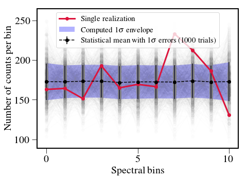
In [79]:
var11 = np.loadtxt('/Users/mrizzo/Downloads/varlstsq11.txt')
var19 = np.loadtxt('/Users/mrizzo/Downloads/varlstsq19.txt')
res11 = np.loadtxt('/Users/mrizzo/Downloads/lstsq11.txt')
res19 = np.loadtxt('/Users/mrizzo/Downloads/lstsq19.txt')
par.nchanperspec_lstsq=1.2
lam_midpts,_ = calculateWaveList(par,method='lstsq')
plt.figure(figsize=(7,5))
print np.mean(res11,axis=1)
plt.plot(lam_midpts,np.mean(res11,axis=1)/np.sqrt(np.mean(var11,axis=1)),'k',label='11 PSFLets',marker='o',)
par.nchanperspec_lstsq=2.0
lam_midpts,_ = calculateWaveList(par,method='lstsq')
plt.plot(lam_midpts,np.mean(res19,axis=1)/np.sqrt(np.mean(var19,axis=1)),'crimson',marker='o',label='19 PSFLets')
plt.plot(lam_midpts,np.mean(res19,axis=1)/np.sqrt(np.mean(var19,axis=1))*np.sqrt(19./11.),linestyle='dashed',marker='o',color='gray',label='19 PSFLets scaled')
plt.xlabel('Wavelength (nm)')
plt.ylabel('Signal-to-noise ratio')
plt.legend()
plt.grid()
plt.savefig('/Users/mrizzo/Downloads/BinningImpactonSNR.pdf',dpi=150,bbox_inches='tight')
crispy - INFO - Reduced cube will have 11 wavelength bins
[ 172.68913212 172.5621709 173.27059043 173.25384699 171.7039103
172.43301376 172.45273913 172.24737764 173.79174915 172.41272738
172.68369981]
crispy - INFO - Reduced cube will have 19 wavelength bins

In [14]:
plt.figure(figsize=(7,5))
plt.plot(lstsq_notsmoothed[:,-2],color='gray',marker='o',linestyle='dashed',label='Without smoothing')
plt.plot(np.arange(N),lstsq[:,-2],'-o',color='crimson',lw=3,label='With smoothing')
plt.grid('on')
plt.legend()
plt.ylabel('Number of counts per bin')
plt.xlabel('Spectral bins')
plt.savefig('/Users/mrizzo/Downloads/With-WithoutSmoothing.pdf',dpi=150,bbox_inches='tight')
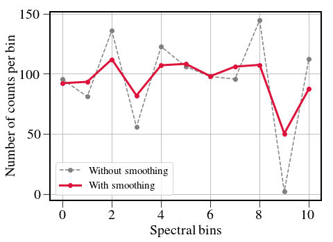
SNR and background pixels¶
In [115]:
test = psflet_subarr[9].copy()
# test /= np.amax(test)
test /= np.sum(test)
print 1./np.sum(test**2),1./np.sum((test[:,12]/np.sum(test[:,12]))**2)
plt.imshow(test)
plt.colorbar(orientation='horizontal')
plt.figure()
test /= np.sum(test**2)
plt.imshow(test)
plt.colorbar(orientation='horizontal')
print len(psflet_subarr)
print 3*19./11.
9.64375347879 3.02965888448
19
5.18181818182


The simulation to do here is the following: 1. Calculate background pixels for the central bin for many trials 2. Repeat for several sampling
In [13]:
vect = np.ones(N)*100*19./N
tot = np.sum(psflet_subarr*vect[:,np.newaxis,np.newaxis],axis=0)
plt.imshow(tot)
Out[13]:
<matplotlib.image.AxesImage at 0x10fcb7410>

In [14]:
tot /= np.sum(tot)
Npix = 1./np.sum(tot**2)
print Npix
58.1864718229
In [111]:
print Npix/19
print (Npix-9.6)/(N-2)
3.06244588542
2.85802775429
In [109]:
print 8.9/5.3
print 5.2/3.06
1.67924528302
1.69934640523
In [236]:
print N
def SNRcalcBeta(vect,pixnoise,ntrials,Niter=5,psflets = psflet_subarr):
psflets_flat = np.reshape(psflets, (psflets.shape[0], -1))
A = psflets_flat.T
N = psflets.shape[0]
lstsq_notsmoothed = np.zeros((N,ntrials,Niter+1))
lstsq = np.zeros((N,ntrials,Niter+1))
varlstsq = np.zeros((N,ntrials,Niter+1))
Rvect = np.zeros((N,ntrials,Niter+1))
beta = np.zeros((N,ntrials,Niter+1))
for j in range(ntrials):
pimg = np.random.poisson(np.sum(psflets*vect[:,np.newaxis,np.newaxis],axis=0)+pixnoise)
img = pimg-pixnoise
sumpix = np.sum(img)
lstsq[:,j,0] = np.ones(N)*sumpix/float(N)/2
if j%(max(ntrials/10,1))==0: print j,"/",ntrials
for i in range(Niter):
prev = lstsq[:,j,i]
variance = np.reshape(np.sum(psflets*prev[:,np.newaxis,np.newaxis],axis=0)+pixnoise,-1)
Ninv = np.diag(1./(variance+1e-10))
Cinv = np.dot(A.T,np.dot(Ninv,A))
C = np.linalg.inv(Cinv)
Q = sp.linalg.sqrtm(Cinv)
s = np.sum(Q,axis=0)
R = Q/s[:,np.newaxis]
x = np.reshape(img,-1)
varlstsq[:,j,i+1] = 1./(s**2+1e-10)
right = np.dot(A.T,np.dot(Ninv,x))
f = np.dot(C,right)
lstsq_notsmoothed[:,j,i+1] = f
lstsq[:,j,i+1] = np.dot(R,f)
Rvect[:,j,i+1] = np.dot(R,vect)
beta[:,j,i+1] = (varlstsq[:,j,i+1]-lstsq[:,j,i+1])/pixnoise
return lstsq,lstsq_notsmoothed,varlstsq,Rvect,beta
19
In [ ]:
# Slist = [10.,50.,100,200,500,1000,10000]
Slist = [2.,4.,8.,16.,32.,64.,128.,256.]
ntrials = 1000
fig1,ax1 = plt.subplots()
fig2,ax2 = plt.subplots()
for pxnoise in [0]:
betalist = []
SNR = []
for S in Slist:
vect=np.ones(N)*S*19./N
lstsq,_,varlstsq,_,beta = SNRcalcBeta(vect,pxnoise,ntrials=ntrials)
ax1.plot(np.mean(beta[:,:,-1],axis=1),label='Pixnoise=%d, S=%d'%(pxnoise,S))
ax1.set_ylabel('Number of equivalent noise pixels')
ax2.plot(np.mean(lstsq[:,:,-1]/np.sqrt(varlstsq[:,:,-1]),axis=1),label='Pixnoise=%d, S=%d'%(pxnoise,S))
ax2.plot(np.sqrt(S))
# ax2.errorbar(np.arange(N),np.mean(lstsq[:,:,-1],axis=1),yerr=np.std(lstsq[:,:,-1],axis=1),label='Statistical mean with 1$\sigma$ errors (1000 trials)',color='k',marker='o',linestyle='dashed')
ax2.set_ylabel('SNR')
betalist.append(np.mean(beta[N/2,:,-1]))
SNR.append(np.mean(lstsq[N/2,:,-1]/np.sqrt(varlstsq[N/2,:,-1])))
In [167]:
fig1.legend()
fig2.legend()
plt.figure()
plt.plot(SNR,betalist)
plt.xlabel('SNR')
plt.ylabel('Number of equivalent noise pixels')
Out[167]:
Text(0,0.5,u'Number of equivalent noise pixels')


Study the background pixels as a function of background electrons per pixel¶
In [118]:
# Slist = [10.,50.,100,200,500,1000,10000]
Slist = [100]
# pxlist = [1.,10.,50,100,500,1000,2000,3000,4000,5000]
pxlist = [1,5,10.,25,50,75,100,150,250,500]
ntrials = 1000
# fig1,ax1 = plt.subplots()
# fig2,ax2 = plt.subplots()
for S in Slist:
SNR = []
SNRlast = []
SNR_stat = []
betalist = []
betalast =[]
for pxnoise in pxlist:
vect=np.ones(N)*S*19./N
lstsq,_,varlstsq,_,beta = SNRcalcBeta(vect,pxnoise,ntrials=ntrials)
# ax1.plot(np.mean(beta[:,:,-1],axis=1),label='Pixnoise=%d, S=%d'%(pxnoise,S))
# ax1.set_ylabel('Number of equivalent noise pixels')
# ax2.plot(np.mean(lstsq[:,:,-1]/np.sqrt(varlstsq[:,:,-1]),axis=1),label='Pixnoise=%d, S=%d'%(pxnoise,S))
# ax2.plot(np.sqrt(S))
# # ax2.errorbar(np.arange(N),np.mean(lstsq[:,:,-1],axis=1),yerr=np.std(lstsq[:,:,-1],axis=1),label='Statistical mean with 1$\sigma$ errors (1000 trials)',color='k',marker='o',linestyle='dashed')
# ax2.set_ylabel('SNR')
betalist.append(np.mean(beta[N/2,:,-1]))
SNR.append(np.mean(lstsq[N/2,:,-1]/np.sqrt(varlstsq[N/2,:,-1])))
SNR_stat.append(np.mean(lstsq[N/2,:,-1]/np.std(lstsq[N/2,:,-1])))
betalast.append(np.mean(beta[-1,:,-1]))
SNRlast.append(np.mean(lstsq[-1,:,-1]/np.sqrt(varlstsq[-1,:,-1])))
# fig1.legend()
# fig2.legend()
In [142]:
plt.figure(figsize=(7,5))
plt.plot(pxlist,SNR,label='Middle of band (%d trials)'%ntrials,color='crimson',lw=3)
# plt.plot(pxlist,SNR_stat,label='Statistical SNR (%d trials)'%ntrials)
plt.plot(pxlist,SNRlast,label='Edge of band (%d trials)'%ntrials,color='royalblue',lw=3)
plt.plot(pxlist,Slist[0]*19./N/(np.sqrt(Slist[0]*19./N+Npix/N*np.array(pxlist))),label='Prediction for middle of band',linestyle='none',marker='o',markersize=10,markerfacecolor='none',color='k')
plt.plot(pxlist,Slist[0]*19./N/(np.sqrt(Slist[0]*19./N+Npix/N*1.8*np.array(pxlist))),label='Prediction for edge of band',linestyle='none',marker='+',markersize=10,markerfacecolor='none',color='k')
plt.xlabel('Background counts per pixel')
plt.ylabel('SNR per spectral bin')
plt.grid('on')
plt.legend()
plt.savefig('/Users/mrizzo/Downloads/BackgroundPixels.pdf',dpi=150,bbox_inches='tight')
print Npix/N
3.06244588542

In [166]:
plt.figure(figsize=(7,5))
plt.plot(pxlist,(SNR-Slist[0]*19./N/(np.sqrt(Slist[0]*19./N+Npix/N*np.array(pxlist))))/SNR*100.,
label='Middle of band',color='crimson',lw=3)
plt.plot(pxlist,(SNRlast-Slist[0]*19./N/(np.sqrt(Slist[0]*19./N+Npix/N*1.8*np.array(pxlist))))/SNR*100.,
label='Edge of band',color='royalblue',lw=3)
plt.grid('on')
plt.ylabel('SNR prediction error (\%)')
plt.xlabel('Background counts per pixel')
plt.legend()
print SNR
print Slist[0]*19./N/(np.sqrt(Slist[0]*19./N+Npix/N*np.array(pxlist)))
print Slist[0]*19./N/(np.sqrt(Slist[0]*19./N))
[9.7181679232022358, 9.1119319401944114, 8.5716994276229102, 7.4134085983822837, 6.237503603598368, 5.4938025730407603, 4.9639893465927418, 4.2663219790928686, 3.4323597735576903, 2.4850431992452053]
[ 9.85030726 9.31241487 8.74959091 7.52579578 6.2854272 5.50746103
4.96142243 4.22816206 3.39890087 2.47595838]
10.0
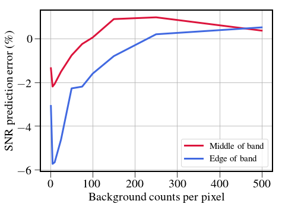
In [157]:
plt.figure(figsize=(7,5))
# plt.plot(pxlist[1:],np.array(betalist[1:])*np.array(pxlist[1:]))
plt.plot(pxlist,np.array(betalist),color='crimson',label='Middle of band',lw=3)
plt.plot(pxlist,np.array(betalast),color='royalblue',label='Edge of band',lw=3)
plt.axhline(y=Npix/N,linestyle='--',label=r"Predicted $\beta$ for middle of band",color='black')
plt.axhline(y=Npix/N*1.8,linestyle=':',label=r"Predicted $\beta$ for edge of band",color='black')
plt.legend()
plt.grid('on',which='both')
plt.xlabel('Background counts per pixel')
plt.ylabel(r'Equivalent $\beta$')
Out[157]:
Text(0,0.5,u'Equivalent $\\beta$')
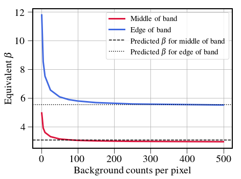
In [158]:
fig,ax = plt.subplots(figsize=(7,5))
# plt.plot(pxlist[1:],np.array(betalist[1:])*np.array(pxlist[1:]))
ax.plot(SNR,np.array(betalist),color='crimson',label='Middle of band',lw=3)
ax.plot(SNRlast,np.array(betalast),color='royalblue',label='Edge of band',lw=3)
# ax2 = ax.twiny()
# ax2.plot(pxlist, np.ones(len(pxlist))) # Create a dummy plot
# ax2.cla()
invpxlist = list(np.array(pxlist)[::-1])
print invpxlist
print SNR
def tick_function(X):
return ["%d" % z for z in X]
# ax2.set_xticks(SNR)
# ax2.set_xticklabels(tick_function(pxlist))
# ax2.set_xlabel("Number of background counts")
plt.axhline(y=Npix/N,linestyle='--',label=r"Predicted $\beta$ for middle of band",color='black')
plt.axhline(y=Npix/N*1.8,linestyle=':',label=r"Predicted $\beta$ for edge of band",color='black')
ax.legend()
ax.grid('on',which='both')
ax.set_xlabel('SNR for 100 signal counts per spectral bin')
ax.set_ylabel(r'Equivalent $\beta$')
print betalist,betalast
print betalast[-1]/betalist[-1]
[500.0, 250.0, 150.0, 100.0, 75.0, 50.0, 25.0, 10.0, 5.0, 1.0]
[9.7181679232022358, 9.1119319401944114, 8.5716994276229102, 7.4134085983822837, 6.237503603598368, 5.4938025730407603, 4.9639893465927418, 4.2663219790928686, 3.4323597735576903, 2.4850431992452053]
[4.943188023717223, 3.8964409196405048, 3.5817811328635392, 3.290539117721706, 3.1276250343040859, 3.0687989476741304, 3.0292280614298215, 2.994209415728462, 2.9604589269212838, 2.9354025923457581] [11.794249288731324, 8.5356133776440046, 7.5122751082333226, 6.545240890528615, 6.0708649536764829, 5.8807527783680182, 5.7815623989377407, 5.6695772399958608, 5.5727231798362205, 5.5032597250380855]
1.87478873916

More on SNR when there is no noise background: IFS maximal extraction efficiency \(\eta\)¶
In [202]:
Slist = [x**2 for x in range(2,17,2)]#[2.,4.,8.,16.,32.,64.,128.,256.]
ntrials = 1000
for pxnoise in [0]:
SNR_nonoise = []
for S in Slist:
vect=np.ones(N)*S*19./N
lstsq,_,varlstsq,_,_ = SNRcalcBeta(vect,pxnoise,ntrials=ntrials)
SNR_nonoise.append(np.mean(lstsq[N/2,:,-1]/np.sqrt(varlstsq[N/2,:,-1])))
In [203]:
plt.figure(figsize=(7,5))
plt.plot(Slist,(SNR_nonoise-np.sqrt(Slist))/SNR_nonoise*100,label='Using estimated variance',color='crimson',lw=3)
print (SNR_nonoise-np.sqrt(Slist)), SNR_nonoise#/SNR*100
# plt.plot(Slist,(SNR_comp-np.sqrt(Slist))/SNR_comp*100,label='Using computed variance from trials',color='royalblue',lw=3)
# plt.plot(Slist,np.sqrt(Slist),label='Predicted SNR',color='royalblue',lw=3)
# plt.plot(pxlist,SNR_stat,label='Statistical SNR (%d trials)'%ntrials)
# plt.plot(pxlist,SNRlast,label='Edge of band (%d trials)'%ntrials,color='royalblue',lw=3)
# plt.plot(pxlist,Slist[0]*19./N/(np.sqrt(Slist[0]*19./N+Npix/N*np.array(pxlist))),label='Prediction for middle of band',linestyle='none',marker='o',markersize=10,markerfacecolor='none',color='k')
# plt.plot(pxlist,Slist[0]*19./N/(np.sqrt(Slist[0]*19./N+Npix/N*1.8*np.array(pxlist))),label='Prediction for edge of band',linestyle='none',marker='+',markersize=10,markerfacecolor='none',color='k')
plt.xlabel('Signal counts per bin')
plt.ylabel('SNR prediction error (\%)')
plt.grid('on')
plt.legend()
[-0.04878409 -0.01530604 -0.00599823 0.01546714 -0.02253229 0.01594308
-0.03621935 -0.03107108] [1.9512159089708676, 3.9846939571868139, 5.9940017724324504, 8.0154671410631337, 9.977467714515436, 12.015943084948438, 13.963780653018409, 15.968928921176269]
Out[203]:
<matplotlib.legend.Legend at 0x1c26598810>

In [212]:
ntrials = 1000
plt.figure(figsize=(7,5))
plt.plot(Slist,(SNR_nonoise-np.sqrt(Slist))/SNR_nonoise*100,label='No background noise',color='crimson',lw=3)
for pxnoise in [10,50,100]:
SNR_noise = []
for S in Slist:
vect=np.ones(N)*S*19./N
lstsq,_,varlstsq,_,_ = SNRcalcBeta(vect,pxnoise,ntrials=ntrials)
SNR_noise.append(np.mean(lstsq[N/2,:,-1]/np.sqrt(varlstsq[N/2,:,-1])))
plt.plot(Slist,(np.array(SNR_noise)-np.array(Slist)*19./N/(np.sqrt(np.array(Slist)*19./N+Npix/N*pxnoise)))/pxnoise*100.,
label='%d background counts per pixels'%pxnoise,lw=3)
plt.xlabel('Signal counts per bin')
plt.ylabel('SNR prediction error (\%)')
plt.grid('on')
plt.legend()
plt.savefig('/Users/mrizzo/Downloads/SNRPredictionError.pdf',dpi=150,bbox_inches='tight')
Out[212]:
<matplotlib.legend.Legend at 0x1c24208e10>

Now let’s repeat this with the full-PSF extraction¶
In [2]:
folder = '/Users/mrizzo/IFS/Extraction/'
PSF_polychrome = fits.open(folder+'/PSF_polychrome.fits')[1].data
PSF_polychrome_cut = PSF_polychrome[:,400:620,570:690]
PSF = np.zeros_like(PSF_polychrome_cut)
for i in range(PSF.shape[0]):
PSF[i] = PSF_polychrome_cut[i]/np.sum(PSF_polychrome_cut[i])
print np.amax(PSF[0])
plt.figure(figsize=(10,10))
plt.imshow(PSF[0],vmin = 0.0,vmax=0.01,cmap=cmap)
plt.colorbar()
0.0180089
Out[2]:
<matplotlib.colorbar.Colorbar at 0x1109f3710>

In [7]:
offaxis_psf_filename='/Users/mrizzo/IFS/OS5/offaxis/spc_offaxis_psf.fits'
offaxis = fits.open(offaxis_psf_filename)[0].data
plt.imshow(offaxis[0,95:160,180:215],cmap=cmap)
plt.axis('off')
Out[7]:
(-0.5, 34.5, -0.5, 64.5)

In [9]:
N=PSF.shape[0]
vect = np.ones(N)*100*19./N
tot = np.sum(PSF*vect[:,np.newaxis,np.newaxis],axis=0)
tot/=np.sum(tot)
totpower = np.sum(tot)
print totpower
print 1./np.sum(tot**2)/N
Npix = 1./np.sum(tot**2)
# plt.figure(figsize=(7,15))
# mask = tot<np.amax(tot)/4
# tot[mask]=0
# print np.sum(tot)
# tot/=np.sum(tot)
# print 1./np.sum(tot**2)/N
# plt.imshow(tot,cmap=cmap)
# plt.colorbar()
plt.figure(figsize=(7,7))
plt.subplot(131)
plt.imshow(offaxis[0,96:160,180:215],cmap=cmap)
plt.title('(a)')
plt.axis('off')
import matplotlib.ticker as ticker
plt.gca().xaxis.set_major_locator(ticker.NullLocator())
plt.gca().yaxis.set_major_locator(ticker.NullLocator())
plt.subplot(132)
plt.imshow(PSF[0],vmin = 0.0,vmax=0.005,cmap=cmap)
plt.title('(b)')
plt.axis('off')
plt.gca().xaxis.set_major_locator(ticker.NullLocator())
plt.gca().yaxis.set_major_locator(ticker.NullLocator())
plt.subplot(133)
plt.imshow(tot/100,vmax=0.00001,cmap=cmap)
plt.title('(c)')
plt.axis('off')
# plt.colorbar(fraction=0.046, pad=0.04)
plt.gca().set_axis_off()
plt.margins(0,0)
import matplotlib.ticker as ticker
# plt.gca().xaxis.set_major_locator(NullLocator())
# plt.gca().yaxis.set_major_locator(NullLocator())
plt.gca().xaxis.set_major_locator(ticker.NullLocator())
plt.gca().yaxis.set_major_locator(ticker.NullLocator())
plt.subplots_adjust(top = 1, bottom = 0, right = 1, left = 0,
hspace = 0, wspace = 0.05)
# plt.subplots_adjust(left=0.0,bottom=0.0,top=1.0,wspace=0.05,hspace=0.0)
plt.savefig('/Users/mrizzo/Downloads/FullPSF.pdf',dpi=150,bbox_inches='tight',pad_inches=0)
1.0
114.516143585
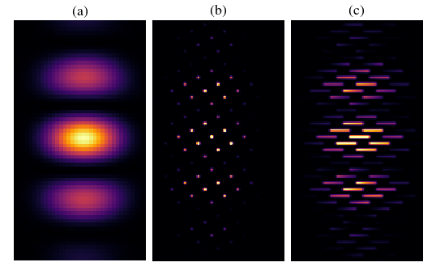
In [255]:
# Slist = [10.,50.,100,200,500,1000,10000]
Slist = [1000]
# pxlist = [1.,10.,50,100,500,1000,2000,3000,4000,5000]
pxlist = [2**p for p in range(5,10)]
ntrials = 1000
# fig1,ax1 = plt.subplots()
# fig2,ax2 = plt.subplots()
for S in Slist:
SNR = []
SNRlast = []
SNR_stat = []
betalist = []
betalast =[]
for pxnoise in pxlist:
vect=np.ones(N)*S*19./N
print pxnoise
lstsq,_,varlstsq,_,beta = SNRcalcBeta(vect,pxnoise,ntrials=ntrials,psflets=PSF,Niter=3)
# ax1.plot(np.mean(beta[:,:,-1],axis=1),label='Pixnoise=%d, S=%d'%(pxnoise,S))
# ax1.set_ylabel('Number of equivalent noise pixels')
# ax2.plot(np.mean(lstsq[:,:,-1]/np.sqrt(varlstsq[:,:,-1]),axis=1),label='Pixnoise=%d, S=%d'%(pxnoise,S))
# ax2.plot(np.sqrt(S))
# # ax2.errorbar(np.arange(N),np.mean(lstsq[:,:,-1],axis=1),yerr=np.std(lstsq[:,:,-1],axis=1),label='Statistical mean with 1$\sigma$ errors (1000 trials)',color='k',marker='o',linestyle='dashed')
# ax2.set_ylabel('SNR')
betalist.append(np.mean(beta[N/2,:,-1]))
SNR.append(np.mean(lstsq[N/2,:,-1]/np.sqrt(varlstsq[N/2,:,-1])))
SNR_stat.append(np.mean(lstsq[N/2,:,-1]/np.std(lstsq[N/2,:,-1])))
betalast.append(np.mean(beta[-1,:,-1]))
SNRlast.append(np.mean(lstsq[-1,:,-1]/np.sqrt(varlstsq[-1,:,-1])))
# fig1.legend()
# fig2.legend()
32
0 / 1000
100 / 1000
200 / 1000
300 / 1000
400 / 1000
500 / 1000
600 / 1000
700 / 1000
800 / 1000
900 / 1000
64
0 / 1000
100 / 1000
200 / 1000
300 / 1000
400 / 1000
500 / 1000
600 / 1000
700 / 1000
800 / 1000
900 / 1000
128
0 / 1000
100 / 1000
200 / 1000
300 / 1000
400 / 1000
500 / 1000
600 / 1000
700 / 1000
800 / 1000
900 / 1000
256
0 / 1000
100 / 1000
200 / 1000
300 / 1000
400 / 1000
500 / 1000
600 / 1000
700 / 1000
800 / 1000
900 / 1000
512
0 / 1000
100 / 1000
200 / 1000
300 / 1000
400 / 1000
500 / 1000
600 / 1000
700 / 1000
800 / 1000
900 / 1000
In [256]:
print SNR,betalist,SNRlast,betalast
[14.059235992818845, 10.789131357991744, 7.9753190211721439, 5.8527687170406235, 4.1408439419855769] [126.90683778611185, 119.38281923093977, 114.9576659867636, 112.47022784109431, 111.17700154249223] [10.640071654771035, 7.9504471843887643, 5.7907635476834125, 4.1247067005938591, 2.8964487929171554] [243.71891452700737, 231.21228819266338, 224.18732000096432, 220.38343973802216, 218.41562107312296]
In [254]:
print [2**p for p in range(5,10)]
print [x**2 for x in range(5,10)]
[32, 64, 128, 256, 512]
In [257]:
58.1864718229
In [265]:
plt.figure(figsize=(7,5))
plt.plot(pxlist,SNR,label='Middle of band (%d trials)'%ntrials,color='crimson',lw=3)
# plt.plot(pxlist,SNR_stat,label='Statistical SNR (%d trials)'%ntrials)
plt.plot(pxlist,SNRlast,label='Edge of band (%d trials)'%ntrials,color='royalblue',lw=3)
plt.plot(pxlist,Slist[0]*19./N/(np.sqrt(Slist[0]*19./N+Npix/N*np.array(pxlist))),label='Prediction for middle of band',linestyle='none',marker='o',markersize=10,markerfacecolor='none',color='k')
plt.plot(pxlist,Slist[0]*19./N/(np.sqrt(Slist[0]*19./N+Npix/N*1.8*np.array(pxlist))),label='Prediction for edge of band',linestyle='none',marker='+',markersize=10,markerfacecolor='none',color='k')
plt.xlabel('Background counts per pixel')
plt.ylabel('SNR per spectral bin')
plt.grid('on')
plt.legend()
plt.savefig('/Users/mrizzo/Downloads/BackgroundPixels_FullPSF.pdf',dpi=150,bbox_inches='tight')
print Npix/N
114.516143585

In [66]:
planet_cube=fits.getdata(folder+'planet_cube_optext.fits')
subimg = planet_cube[N/2,40:60,50:70]
# subimg = planet_cube[N/2]
plt.imshow(subimg,cmap=cmap)
tot = subimg/np.nansum(subimg)
print 1./np.nansum(tot**2)
38.3518341728

Comparison between full forward model and regular matched filter¶
In [2]:
folder = '/Users/mrizzo/IFS/Extraction/'
PSF_polychrome = fits.open(folder+'/PSF_polychrome.fits')[1].data
# PSF_polychrome_cut = PSF_polychrome[:,400:620,570:690]
PSF_polychrome_cut = PSF_polychrome
PSF = np.zeros_like(PSF_polychrome_cut)
for i in range(PSF.shape[0]):
PSF[i] = PSF_polychrome_cut[i]/np.sum(PSF_polychrome_cut[i])
print np.amax(PSF[0])
plt.figure(figsize=(10,10))
plt.imshow(PSF[0],vmin = 0.0,vmax=0.01,cmap=cmap)
plt.colorbar()
N = PSF.shape[0]
0.0180023
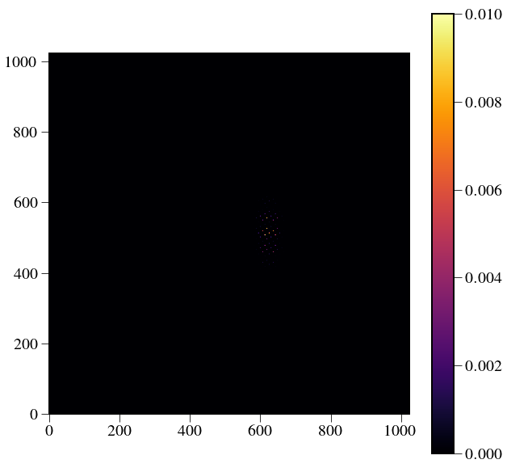
In [6]:
# IWA=3
# OWA=9
# mask,scratch = bowtie(PSF[0],ydim//2-1,xdim//2,openingAngle=65,
# clocking=-par.philens*180./np.pi,
# IWApix=IWA*lamc/par.lenslet_wav/par.lenslet_sampling,
# OWApix=OWA*lamc/par.lenslet_wav/par.lenslet_sampling,
# export=None,twomasks=False)
# construct_mflib(par,planet_cube=folder+'planet_cube.fits',
# threshold=0.2,
# lamc=lamc,
# BW=BW,
# outdir=folder,
# mask=mask,
# trim=30,
# outname = 'mflib.fits.gz',
# order=3)
mflib = folder+'mflib.fits.gz'
In [3]:
planet_cube=fits.getdata(folder+'planet_cube_optext.fits')
mf = np.zeros_like(planet_cube)
psf = np.zeros_like(planet_cube)
for i in range(planet_cube.shape[0]):
psf[i] = planet_cube[i]/np.nansum(planet_cube[i])
mf[i] = psf[i]/np.nansum(psf[i]**2)
plt.imshow(mf[N/2])
plt.colorbar()
Out[3]:
<matplotlib.colorbar.Colorbar at 0x12580a090>

In [7]:
from crispy.IFS import reduceIFSMap
from crispy.tools.postprocessing import construct_mflib,convolved_mf
def SNRcompare(vect,pixnoise,ntrials,psflets=PSF,niter=3):
N = psflets.shape[0]
lstsq = np.zeros((N,ntrials,niter+1))
varlstsq = np.zeros((N,ntrials,niter+1))
lstsqlenslet = np.zeros((N,ntrials))
varlstsqlenslet = np.zeros((N,ntrials))
mfiltered = np.zeros((N,ntrials))
mfcov = np.zeros((N,ntrials))
Rvect = np.zeros((N,ntrials,niter+1))
for j in range(ntrials):
avgimg = np.sum(psflets*vect[:,np.newaxis,np.newaxis],axis=0)+pixnoise
avgimg[avgimg<0]=0.0
pimg = np.random.poisson(avgimg)
img = pimg-pixnoise
subim = img[400:620,570:690]
sumpix = np.sum(subim)
subpsflets = psflets[:,400:620,570:690]
lstsq[:,j,0] = np.ones(N)*sumpix/float(N)
if j%(max(ntrials/10,1))==0: print j,"/",ntrials
for i in range(niter):
prev = lstsq[:,j,i]
variance = np.reshape(np.sum(subpsflets*prev[:,np.newaxis,np.newaxis],axis=0)+pixnoise,-1)
Ninv = np.diag(1./(variance+1e-10))
psflets_flat = np.reshape(subpsflets, (subpsflets.shape[0], -1))
A = psflets_flat.T
Cinv = np.dot(A.T,np.dot(Ninv,A))
C = np.linalg.inv(Cinv)
Q = sp.linalg.sqrtm(Cinv)
s = np.sum(Q,axis=0)
R = Q/s[:,np.newaxis]
x = np.reshape(subim,-1)
varlstsq[:,j,i+1] = 1./(s**2+1e-10)
right = np.dot(A.T,np.dot(Ninv,x))
f = np.dot(C,right)
lstsq[:,j,i+1] = np.dot(R,f)
Rvect[:,j,i+1] = np.dot(R,vect)
### Now extract into cube
cubeout = reduceIFSMap(par,img.astype(float),method='lstsq_conv',smoothbad = False,
fitbkgnd=False,niter=niter,pixnoise=pixnoise,normpsflets=True)
### Apply matched filter to data and variance
# convolved = convolved_mf(cubeout.data,mflib)
# convvar = convolved_mf(1./(cubeout.ivar+1e-10),mflib)
### Find peak
# yp,xp = np.unravel_index(np.nanargmax(convolved[N//2]), convolved[N//2].shape)
# mfiltered[:,j] = convolved[:,yp,xp]
# mfcov[:,j] = convvar[:,yp,xp]
for k in range(N):
mfiltered[k,j] = np.nansum(cubeout.data[k]*mf[k])
mfcov[k,j] = np.nansum((1./cubeout.ivar[k])*mf[k]**2)
# guess = np.nansum(cubeout.data[k]*mf[k])
# #variance = np.reshape(1./(cubeout.ivar[k]+1e-10),-1)
# Ninv = np.diag(np.reshape(cubeout.ivar[k],-1))
# psfs_flat = np.reshape(psf[k], -1)
# A = psfs_flat.T
# Cinv = np.dot(A.T,np.dot(Ninv,A))
# Cinv =
# C = np.linalg.inv(Cinv)
# x = np.reshape(cubeout.data[k],-1)
# right = np.dot(A.T,np.dot(Ninv,x))
# lstsqlenslet[k,j] = np.dot(C,right)
# varlstsqlenslet[k,j] = C
return lstsq[:,:,-1],varlstsq[:,:,-1],mfiltered,mfcov,cubeout#,lstsqlenslet,varlstsqlenslet
In [20]:
# Ninv = np.diag(np.reshape(cubeout.ivar[N/2],-1))
# psfs_flat = np.reshape(psf[N/2], -1)
# A = psfs_flat.T
# Cinv = np.dot(A.T,np.dot(Ninv,A))
# Cinv= np.nansum(psfs_flat**2*Ninv)
# print np.sqrt(1./Cinv)
print np.nansum(mf[N/2]**2),np.nansum(mf[N/2])
print mf[N/2,51,62],mf[N/2,51,62]**2
print np.sqrt(np.nansum(cubeout.data[N/2]*mf[N/2])+114*100)
print
38.3518 38.3518
0.565407 0.319685050918
109.476746906
In [121]:
print cubeout.data[N/2,50,61],np.sqrt(1./cubeout.ivar[N/2,50,61])
53.6751473016 74.6397125127
In [18]:
N = PSF.shape[0]
S=500
pixnoise=1000
vect=np.ones(N)*S*19./N
ntrials=1
lstsq,varlstsq,mfiltered,mfcov,cubeout = SNRcompare(vect,pixnoise,ntrials)
0 / 1
crispy - INFO - Reduced cube will have 11 wavelength bins
crispy - INFO - Writing data to ..//SimResults/20180208-165351_red_lstsq_conv_resid.fits
crispy - INFO - Writing data to ..//SimResults/20180208-165351_red_lstsq_conv_model.fits
crispy - INFO - Elapsed time: 22.105994s
In [19]:
plt.plot(mfiltered/np.sqrt(mfcov))
plt.plot(lstsq/np.sqrt(varlstsq))
print np.nansum(cubeout.data[N/2])
-1582.85751479

In [16]:
plt.plot(lstsq)
plt.plot(mfiltered)
Out[16]:
[<matplotlib.lines.Line2D at 0x124d64a50>]

In [17]:
plt.plot(np.sqrt(mfcov))
plt.plot(np.sqrt(varlstsq))
Out[17]:
[<matplotlib.lines.Line2D at 0x124be87d0>]

In [12]:
plt.imshow(1./np.sqrt(cubeout.ivar[N/2,40:60,50:70]))
plt.colorbar()
Out[12]:
<matplotlib.colorbar.Colorbar at 0x10d8cd6d0>

In [13]:
plt.imshow(cubeout.data[N/2,40:60,50:70])
plt.colorbar()
Out[13]:
<matplotlib.colorbar.Colorbar at 0x124b51990>

In [13]:
print lstsq,mfiltered
[[ 1061.31082252]
[ 994.51910918]
[ 1067.93241136]
[ 943.40005562]
[ 1023.78083903]
[ 871.57754423]
[ 1007.34183633]
[ 1022.40889456]
[ 1015.63451369]
[ 1047.93379362]
[ 883.44915616]
[ 1076.92231621]
[ 1004.4325102 ]
[ 992.7912267 ]
[ 863.55120109]
[ 1131.7923657 ]
[ 873.40494278]
[ 992.60197439]
[ 912.4299098 ]] [[ 1067.61078115]
[ 979.30638396]
[ 1071.10937563]
[ 929.73694601]
[ 1031.18331398]
[ 867.98491063]
[ 1004.43710252]
[ 1015.80880313]
[ 1008.57727183]
[ 1058.5582396 ]
[ 870.79418333]
[ 1072.97664416]
[ 1018.21021301]
[ 1015.53393698]
[ 863.72700666]
[ 1105.59609786]
[ 903.43050243]
[ 1006.46072792]
[ 964.38377064]]
In [50]:
N = PSF.shape[0]
S=1000
pixnoise=100
vect=np.ones(N)*S*19./N
ntrials=50
lstsq,varlstsq,mfiltered,mfcov,cubeout = SNRcompare(vect,pixnoise,ntrials)
0 / 50
crispy - INFO - Reduced cube will have 11 wavelength bins
crispy - INFO - Writing data to ..//SimResults/20180207-150326_red_lstsq_conv_resid.fits
crispy - INFO - Writing data to ..//SimResults/20180207-150326_red_lstsq_conv_model.fits
crispy - INFO - Elapsed time: 23.342800s
crispy - INFO - Reduced cube will have 11 wavelength bins
crispy - INFO - Writing data to ..//SimResults/20180207-150356_red_lstsq_conv_resid.fits
crispy - INFO - Writing data to ..//SimResults/20180207-150356_red_lstsq_conv_model.fits
crispy - INFO - Elapsed time: 23.030375s
crispy - INFO - Reduced cube will have 11 wavelength bins
crispy - INFO - Writing data to ..//SimResults/20180207-150426_red_lstsq_conv_resid.fits
crispy - INFO - Writing data to ..//SimResults/20180207-150426_red_lstsq_conv_model.fits
crispy - INFO - Elapsed time: 23.071605s
crispy - INFO - Reduced cube will have 11 wavelength bins
crispy - INFO - Writing data to ..//SimResults/20180207-150455_red_lstsq_conv_resid.fits
crispy - INFO - Writing data to ..//SimResults/20180207-150455_red_lstsq_conv_model.fits
crispy - INFO - Elapsed time: 23.079902s
crispy - INFO - Reduced cube will have 11 wavelength bins
crispy - INFO - Writing data to ..//SimResults/20180207-150525_red_lstsq_conv_resid.fits
crispy - INFO - Writing data to ..//SimResults/20180207-150525_red_lstsq_conv_model.fits
crispy - INFO - Elapsed time: 23.047227s
5 / 50
crispy - INFO - Reduced cube will have 11 wavelength bins
crispy - INFO - Writing data to ..//SimResults/20180207-150554_red_lstsq_conv_resid.fits
crispy - INFO - Writing data to ..//SimResults/20180207-150554_red_lstsq_conv_model.fits
crispy - INFO - Elapsed time: 23.249498s
crispy - INFO - Reduced cube will have 11 wavelength bins
crispy - INFO - Writing data to ..//SimResults/20180207-150624_red_lstsq_conv_resid.fits
crispy - INFO - Writing data to ..//SimResults/20180207-150624_red_lstsq_conv_model.fits
crispy - INFO - Elapsed time: 23.322443s
crispy - INFO - Reduced cube will have 11 wavelength bins
crispy - INFO - Writing data to ..//SimResults/20180207-150654_red_lstsq_conv_resid.fits
crispy - INFO - Writing data to ..//SimResults/20180207-150654_red_lstsq_conv_model.fits
crispy - INFO - Elapsed time: 23.335151s
crispy - INFO - Reduced cube will have 11 wavelength bins
crispy - INFO - Writing data to ..//SimResults/20180207-150724_red_lstsq_conv_resid.fits
crispy - INFO - Writing data to ..//SimResults/20180207-150724_red_lstsq_conv_model.fits
crispy - INFO - Elapsed time: 23.193393s
crispy - INFO - Reduced cube will have 11 wavelength bins
crispy - INFO - Writing data to ..//SimResults/20180207-150754_red_lstsq_conv_resid.fits
crispy - INFO - Writing data to ..//SimResults/20180207-150754_red_lstsq_conv_model.fits
crispy - INFO - Elapsed time: 23.379897s
10 / 50
crispy - INFO - Reduced cube will have 11 wavelength bins
crispy - INFO - Writing data to ..//SimResults/20180207-150824_red_lstsq_conv_resid.fits
crispy - INFO - Writing data to ..//SimResults/20180207-150824_red_lstsq_conv_model.fits
crispy - INFO - Elapsed time: 23.527838s
crispy - INFO - Reduced cube will have 11 wavelength bins
crispy - INFO - Writing data to ..//SimResults/20180207-150855_red_lstsq_conv_resid.fits
crispy - INFO - Writing data to ..//SimResults/20180207-150855_red_lstsq_conv_model.fits
crispy - INFO - Elapsed time: 23.212736s
crispy - INFO - Reduced cube will have 11 wavelength bins
crispy - INFO - Writing data to ..//SimResults/20180207-150924_red_lstsq_conv_resid.fits
crispy - INFO - Writing data to ..//SimResults/20180207-150924_red_lstsq_conv_model.fits
crispy - INFO - Elapsed time: 23.317232s
crispy - INFO - Reduced cube will have 11 wavelength bins
crispy - INFO - Writing data to ..//SimResults/20180207-150954_red_lstsq_conv_resid.fits
crispy - INFO - Writing data to ..//SimResults/20180207-150954_red_lstsq_conv_model.fits
crispy - INFO - Elapsed time: 23.179789s
crispy - INFO - Reduced cube will have 11 wavelength bins
crispy - INFO - Writing data to ..//SimResults/20180207-151023_red_lstsq_conv_resid.fits
crispy - INFO - Writing data to ..//SimResults/20180207-151023_red_lstsq_conv_model.fits
crispy - INFO - Elapsed time: 23.180082s
15 / 50
crispy - INFO - Reduced cube will have 11 wavelength bins
crispy - INFO - Writing data to ..//SimResults/20180207-151053_red_lstsq_conv_resid.fits
crispy - INFO - Writing data to ..//SimResults/20180207-151053_red_lstsq_conv_model.fits
crispy - INFO - Elapsed time: 23.115865s
crispy - INFO - Reduced cube will have 11 wavelength bins
crispy - INFO - Writing data to ..//SimResults/20180207-151122_red_lstsq_conv_resid.fits
crispy - INFO - Writing data to ..//SimResults/20180207-151122_red_lstsq_conv_model.fits
crispy - INFO - Elapsed time: 23.150619s
crispy - INFO - Reduced cube will have 11 wavelength bins
crispy - INFO - Writing data to ..//SimResults/20180207-151152_red_lstsq_conv_resid.fits
crispy - INFO - Writing data to ..//SimResults/20180207-151152_red_lstsq_conv_model.fits
crispy - INFO - Elapsed time: 23.490954s
crispy - INFO - Reduced cube will have 11 wavelength bins
crispy - INFO - Writing data to ..//SimResults/20180207-151223_red_lstsq_conv_resid.fits
crispy - INFO - Writing data to ..//SimResults/20180207-151223_red_lstsq_conv_model.fits
crispy - INFO - Elapsed time: 23.407231s
crispy - INFO - Reduced cube will have 11 wavelength bins
crispy - INFO - Writing data to ..//SimResults/20180207-151253_red_lstsq_conv_resid.fits
crispy - INFO - Writing data to ..//SimResults/20180207-151253_red_lstsq_conv_model.fits
crispy - INFO - Elapsed time: 23.251627s
20 / 50
crispy - INFO - Reduced cube will have 11 wavelength bins
crispy - INFO - Writing data to ..//SimResults/20180207-151323_red_lstsq_conv_resid.fits
crispy - INFO - Writing data to ..//SimResults/20180207-151323_red_lstsq_conv_model.fits
crispy - INFO - Elapsed time: 23.253734s
crispy - INFO - Reduced cube will have 11 wavelength bins
crispy - INFO - Writing data to ..//SimResults/20180207-151352_red_lstsq_conv_resid.fits
crispy - INFO - Writing data to ..//SimResults/20180207-151352_red_lstsq_conv_model.fits
crispy - INFO - Elapsed time: 23.179134s
crispy - INFO - Reduced cube will have 11 wavelength bins
crispy - INFO - Writing data to ..//SimResults/20180207-151422_red_lstsq_conv_resid.fits
crispy - INFO - Writing data to ..//SimResults/20180207-151422_red_lstsq_conv_model.fits
crispy - INFO - Elapsed time: 23.431367s
crispy - INFO - Reduced cube will have 11 wavelength bins
crispy - INFO - Writing data to ..//SimResults/20180207-151452_red_lstsq_conv_resid.fits
crispy - INFO - Writing data to ..//SimResults/20180207-151452_red_lstsq_conv_model.fits
crispy - INFO - Elapsed time: 23.224063s
crispy - INFO - Reduced cube will have 11 wavelength bins
crispy - INFO - Writing data to ..//SimResults/20180207-151523_red_lstsq_conv_resid.fits
crispy - INFO - Writing data to ..//SimResults/20180207-151523_red_lstsq_conv_model.fits
crispy - INFO - Elapsed time: 23.572041s
25 / 50
crispy - INFO - Reduced cube will have 11 wavelength bins
crispy - INFO - Writing data to ..//SimResults/20180207-151553_red_lstsq_conv_resid.fits
crispy - INFO - Writing data to ..//SimResults/20180207-151553_red_lstsq_conv_model.fits
crispy - INFO - Elapsed time: 23.475759s
crispy - INFO - Reduced cube will have 11 wavelength bins
crispy - INFO - Writing data to ..//SimResults/20180207-151623_red_lstsq_conv_resid.fits
crispy - INFO - Writing data to ..//SimResults/20180207-151623_red_lstsq_conv_model.fits
crispy - INFO - Elapsed time: 23.294719s
crispy - INFO - Reduced cube will have 11 wavelength bins
crispy - INFO - Writing data to ..//SimResults/20180207-151653_red_lstsq_conv_resid.fits
crispy - INFO - Writing data to ..//SimResults/20180207-151653_red_lstsq_conv_model.fits
crispy - INFO - Elapsed time: 23.130086s
crispy - INFO - Reduced cube will have 11 wavelength bins
crispy - INFO - Writing data to ..//SimResults/20180207-151722_red_lstsq_conv_resid.fits
crispy - INFO - Writing data to ..//SimResults/20180207-151722_red_lstsq_conv_model.fits
crispy - INFO - Elapsed time: 23.386372s
crispy - INFO - Reduced cube will have 11 wavelength bins
crispy - INFO - Writing data to ..//SimResults/20180207-151752_red_lstsq_conv_resid.fits
crispy - INFO - Writing data to ..//SimResults/20180207-151752_red_lstsq_conv_model.fits
crispy - INFO - Elapsed time: 23.313976s
30 / 50
crispy - INFO - Reduced cube will have 11 wavelength bins
crispy - INFO - Writing data to ..//SimResults/20180207-151822_red_lstsq_conv_resid.fits
crispy - INFO - Writing data to ..//SimResults/20180207-151822_red_lstsq_conv_model.fits
crispy - INFO - Elapsed time: 23.442288s
crispy - INFO - Reduced cube will have 11 wavelength bins
crispy - INFO - Writing data to ..//SimResults/20180207-151852_red_lstsq_conv_resid.fits
crispy - INFO - Writing data to ..//SimResults/20180207-151852_red_lstsq_conv_model.fits
crispy - INFO - Elapsed time: 23.477376s
crispy - INFO - Reduced cube will have 11 wavelength bins
crispy - INFO - Writing data to ..//SimResults/20180207-151922_red_lstsq_conv_resid.fits
crispy - INFO - Writing data to ..//SimResults/20180207-151922_red_lstsq_conv_model.fits
crispy - INFO - Elapsed time: 23.319423s
crispy - INFO - Reduced cube will have 11 wavelength bins
crispy - INFO - Writing data to ..//SimResults/20180207-151952_red_lstsq_conv_resid.fits
crispy - INFO - Writing data to ..//SimResults/20180207-151952_red_lstsq_conv_model.fits
crispy - INFO - Elapsed time: 23.334687s
crispy - INFO - Reduced cube will have 11 wavelength bins
crispy - INFO - Writing data to ..//SimResults/20180207-152023_red_lstsq_conv_resid.fits
crispy - INFO - Writing data to ..//SimResults/20180207-152023_red_lstsq_conv_model.fits
crispy - INFO - Elapsed time: 23.431495s
35 / 50
crispy - INFO - Reduced cube will have 11 wavelength bins
crispy - INFO - Writing data to ..//SimResults/20180207-152052_red_lstsq_conv_resid.fits
crispy - INFO - Writing data to ..//SimResults/20180207-152052_red_lstsq_conv_model.fits
crispy - INFO - Elapsed time: 23.873340s
crispy - INFO - Reduced cube will have 11 wavelength bins
crispy - INFO - Writing data to ..//SimResults/20180207-152123_red_lstsq_conv_resid.fits
crispy - INFO - Writing data to ..//SimResults/20180207-152123_red_lstsq_conv_model.fits
crispy - INFO - Elapsed time: 23.274975s
crispy - INFO - Reduced cube will have 11 wavelength bins
crispy - INFO - Writing data to ..//SimResults/20180207-152153_red_lstsq_conv_resid.fits
crispy - INFO - Writing data to ..//SimResults/20180207-152153_red_lstsq_conv_model.fits
crispy - INFO - Elapsed time: 23.254143s
crispy - INFO - Reduced cube will have 11 wavelength bins
crispy - INFO - Writing data to ..//SimResults/20180207-152223_red_lstsq_conv_resid.fits
crispy - INFO - Writing data to ..//SimResults/20180207-152223_red_lstsq_conv_model.fits
crispy - INFO - Elapsed time: 23.479642s
crispy - INFO - Reduced cube will have 11 wavelength bins
crispy - INFO - Writing data to ..//SimResults/20180207-152253_red_lstsq_conv_resid.fits
crispy - INFO - Writing data to ..//SimResults/20180207-152253_red_lstsq_conv_model.fits
crispy - INFO - Elapsed time: 23.487835s
40 / 50
crispy - INFO - Reduced cube will have 11 wavelength bins
crispy - INFO - Writing data to ..//SimResults/20180207-152324_red_lstsq_conv_resid.fits
crispy - INFO - Writing data to ..//SimResults/20180207-152324_red_lstsq_conv_model.fits
crispy - INFO - Elapsed time: 23.071946s
crispy - INFO - Reduced cube will have 11 wavelength bins
crispy - INFO - Writing data to ..//SimResults/20180207-152353_red_lstsq_conv_resid.fits
crispy - INFO - Writing data to ..//SimResults/20180207-152353_red_lstsq_conv_model.fits
crispy - INFO - Elapsed time: 23.026329s
crispy - INFO - Reduced cube will have 11 wavelength bins
crispy - INFO - Writing data to ..//SimResults/20180207-152422_red_lstsq_conv_resid.fits
crispy - INFO - Writing data to ..//SimResults/20180207-152422_red_lstsq_conv_model.fits
crispy - INFO - Elapsed time: 23.272262s
crispy - INFO - Reduced cube will have 11 wavelength bins
crispy - INFO - Writing data to ..//SimResults/20180207-152452_red_lstsq_conv_resid.fits
crispy - INFO - Writing data to ..//SimResults/20180207-152452_red_lstsq_conv_model.fits
crispy - INFO - Elapsed time: 22.866432s
crispy - INFO - Reduced cube will have 11 wavelength bins
crispy - INFO - Writing data to ..//SimResults/20180207-152520_red_lstsq_conv_resid.fits
crispy - INFO - Writing data to ..//SimResults/20180207-152520_red_lstsq_conv_model.fits
crispy - INFO - Elapsed time: 23.110020s
45 / 50
crispy - INFO - Reduced cube will have 11 wavelength bins
crispy - INFO - Writing data to ..//SimResults/20180207-152550_red_lstsq_conv_resid.fits
crispy - INFO - Writing data to ..//SimResults/20180207-152550_red_lstsq_conv_model.fits
crispy - INFO - Elapsed time: 23.044612s
crispy - INFO - Reduced cube will have 11 wavelength bins
crispy - INFO - Writing data to ..//SimResults/20180207-152620_red_lstsq_conv_resid.fits
crispy - INFO - Writing data to ..//SimResults/20180207-152620_red_lstsq_conv_model.fits
crispy - INFO - Elapsed time: 23.064242s
crispy - INFO - Reduced cube will have 11 wavelength bins
crispy - INFO - Writing data to ..//SimResults/20180207-152649_red_lstsq_conv_resid.fits
crispy - INFO - Writing data to ..//SimResults/20180207-152649_red_lstsq_conv_model.fits
crispy - INFO - Elapsed time: 23.101798s
crispy - INFO - Reduced cube will have 11 wavelength bins
crispy - INFO - Writing data to ..//SimResults/20180207-152719_red_lstsq_conv_resid.fits
crispy - INFO - Writing data to ..//SimResults/20180207-152719_red_lstsq_conv_model.fits
crispy - INFO - Elapsed time: 23.038251s
crispy - INFO - Reduced cube will have 11 wavelength bins
crispy - INFO - Writing data to ..//SimResults/20180207-152748_red_lstsq_conv_resid.fits
crispy - INFO - Writing data to ..//SimResults/20180207-152748_red_lstsq_conv_model.fits
crispy - INFO - Elapsed time: 23.216064s
In [57]:
plt.plot(np.std(lstsq,axis=1))
plt.plot(np.std(mfiltered,axis=1))
plt.plot(np.sqrt(varlstsq[:,-1]))
Out[57]:
[<matplotlib.lines.Line2D at 0x124bfc410>]
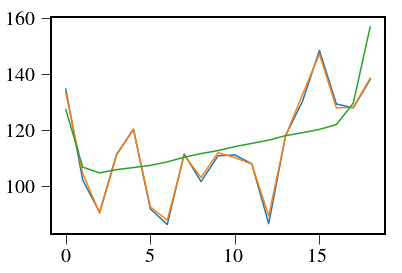
In [65]:
np.mean(lstsq-mfiltered,axis=1)
Out[65]:
array([ -6.74855616, 1.93142258, 5.03869093, 6.41954798,
4.33683876, -1.61534121, -0.81748592, 5.17931096,
1.38307764, 3.5391345 , 0.54107266, 1.9549089 ,
-2.38907262, -0.1499417 , 1.27518251, -1.20862136,
-0.77566602, -37.47518884, -41.80053688])
In [60]:
plt.plot(lstsq-mfiltered)
Out[60]:
[<matplotlib.lines.Line2D at 0x125225f50>,
<matplotlib.lines.Line2D at 0x1c2ce14290>,
<matplotlib.lines.Line2D at 0x1c2ce14350>,
<matplotlib.lines.Line2D at 0x1c2ce14410>,
<matplotlib.lines.Line2D at 0x1c2ce144d0>,
<matplotlib.lines.Line2D at 0x1c2ce14590>,
<matplotlib.lines.Line2D at 0x1c2ce14650>,
<matplotlib.lines.Line2D at 0x1c2ce14710>,
<matplotlib.lines.Line2D at 0x1c2ce147d0>,
<matplotlib.lines.Line2D at 0x1c2ce14890>,
<matplotlib.lines.Line2D at 0x1c2ce14950>,
<matplotlib.lines.Line2D at 0x1c2ce14a10>,
<matplotlib.lines.Line2D at 0x1c2ce14ad0>,
<matplotlib.lines.Line2D at 0x1c2ce14b90>,
<matplotlib.lines.Line2D at 0x1c2ce14c50>,
<matplotlib.lines.Line2D at 0x1c2ce14d10>,
<matplotlib.lines.Line2D at 0x1c2ce14dd0>,
<matplotlib.lines.Line2D at 0x1c2ce14e90>,
<matplotlib.lines.Line2D at 0x1c2ce14f50>,
<matplotlib.lines.Line2D at 0x1c2ccfc050>,
<matplotlib.lines.Line2D at 0x1c2cde6310>,
<matplotlib.lines.Line2D at 0x1c2ccfc1d0>,
<matplotlib.lines.Line2D at 0x1c2ccfc290>,
<matplotlib.lines.Line2D at 0x1c2ccfc350>,
<matplotlib.lines.Line2D at 0x1c2ccfc410>,
<matplotlib.lines.Line2D at 0x1c2ccfc4d0>,
<matplotlib.lines.Line2D at 0x1c2ccfc590>,
<matplotlib.lines.Line2D at 0x1c2ccfc650>,
<matplotlib.lines.Line2D at 0x1c2ccfc710>,
<matplotlib.lines.Line2D at 0x1c2ccfc7d0>,
<matplotlib.lines.Line2D at 0x1c2ccfc110>,
<matplotlib.lines.Line2D at 0x1c2ccfc950>,
<matplotlib.lines.Line2D at 0x1c2ccfca10>,
<matplotlib.lines.Line2D at 0x1c2ccfcad0>,
<matplotlib.lines.Line2D at 0x1c2ccfcb90>,
<matplotlib.lines.Line2D at 0x1c2ccfcc50>,
<matplotlib.lines.Line2D at 0x1c2ccfcd10>,
<matplotlib.lines.Line2D at 0x1c2ccfcdd0>,
<matplotlib.lines.Line2D at 0x1c2ccfce90>,
<matplotlib.lines.Line2D at 0x1c2ccfcf50>,
<matplotlib.lines.Line2D at 0x1c2ccfc890>,
<matplotlib.lines.Line2D at 0x1c2cd06110>,
<matplotlib.lines.Line2D at 0x1c2cd061d0>,
<matplotlib.lines.Line2D at 0x1c2cd06290>,
<matplotlib.lines.Line2D at 0x1c2cd06350>,
<matplotlib.lines.Line2D at 0x1c2cd06410>,
<matplotlib.lines.Line2D at 0x1c2cd064d0>,
<matplotlib.lines.Line2D at 0x1c2cd06590>,
<matplotlib.lines.Line2D at 0x1c2cd06650>,
<matplotlib.lines.Line2D at 0x1c2cd06710>]

In [64]:
np.sqrt(np.nansum((1./(cubeout.ivar[N/2]))*mf[N/2]))
Out[64]:
461.01998777490553
In [32]:
from crispy.IFS import reduceIFSMap
from crispy.tools.postprocessing import construct_mflib,convolved_mf
N = PSF.shape[0]
S=10000
pixnoise=100
vect=np.ones(N)*S*19./N
pimg = np.random.poisson(np.sum(PSF*vect[:,np.newaxis,np.newaxis],axis=0)+pixnoise)
img = (pimg-pixnoise).astype(float)
cubeout = reduceIFSMap(par,img,method='lstsq_conv',smoothbad = False,fitbkgnd=False,niter=3,pixnoise=pixnoise)
crispy - INFO - Reduced cube will have 11 wavelength bins
crispy - INFO - Writing data to ..//SimResults/20180207-130240_red_lstsq_conv_resid.fits
crispy - INFO - Writing data to ..//SimResults/20180207-130240_red_lstsq_conv_model.fits
crispy - INFO - Elapsed time: 21.131454s
In [38]:
plt.imshow(1./np.sqrt(cubeout.ivar[N/2,40:60,50:70]))
plt.colorbar()# print(np.sqrt(1./cubeout.ivar[N/2,40:60,50:70]))
# print(cubeout.data[N/2,40:60,50:70])
plt.figure()
plt.imshow(cubeout.data[N/2,40:60,50:70]*np.sqrt(cubeout.ivar[N/2,40:60,50:70]))
plt.colorbar()
plt.figure()
plt.imshow(cubeout.data[N/2,40:60,50:70])
plt.colorbar()
plt.figure()
plt.plot(cubeout.data[:,50,61]*np.sqrt(cubeout.ivar[:,50,61]))
Out[38]:
[<matplotlib.lines.Line2D at 0x1c25b70810>]
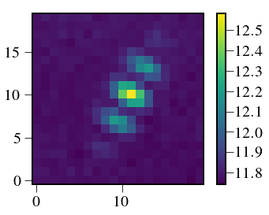


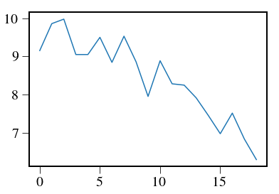